Acordei no não recomendável Hotel Laçador em Santana do Livramento, para pegar o primeiro horário de café da manhã, e resolver tudo que tinha de burocracia para não ficar mais naquela cidade. Talvez o cansaço acumulado da viagem já estivesse trazendo consequências, a paciência estava no nível mínimo.
O café da manhã, como eu já esperava, era bem limitado e nada bom. Comi um pão de forma com manteiga, bebi um café puro e olhe lá. E estava cheio. A maioria dos clientes do hotel são “muambeiros” ou “sacoleiros”, que vão para os “free shops” de Rivera fazer compras de coisas como bebidas alcoólicas (principalmente) e eletrônicos, para revender depois em suas cidades. Bem estilo compras no Paraguai.
Aproveitei para reclamar com a senhora que estava na recepção do chuveiro que não funcionava, e ela disse que mandaria consertar. Agora já era, pensei.
Eu tinha que contratar o Seguro Carta Verde para rodar no Uruguai, conforme tinha visto na internet, e para isso precisava achar uma corretora de seguros. Também tinha que ir na Polícia Federal comunicar minha saída do país, bem como do veículo. E queria rodar pelas lojas em Rivera, para ver o tal Free Shop, pensando de repente em comprar roupas novas e jogar fora as minhas que estavam sujas.
Saí rapidamente, a pé, para ver outros hotéis, especialmente um que tinha visto com preço bom pela internet. Dois quarteirões andando e encontrei o Hotel Livramento. Fui atendido por um simpático cidadão com feição asiática, e perguntei o preço. R$ 60,00. Pedi pra ver o quarto. Bem melhor do que o do Laçador. Tinha estacionamento para a moto no posto de gasolina em frente, incluído no preço. Falei que iria ficar. Voltei no outro hotel, catei minhas coisas, amarrei de qualquer jeito na moto, paguei a diária e fui embora, sem saudades, para para minha nova base.
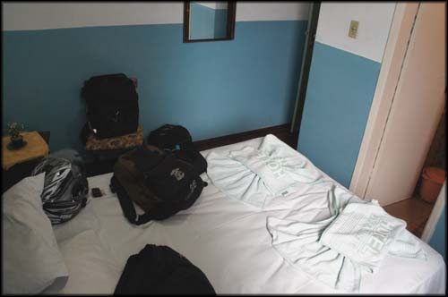Quarto do Hotel Livramento, não é top mas era melhorzinho...
Finalmente tomei um bom banho com água quente. Nem me importei com o teto do banheiro todo mofado, clamando por uma pintura básica. Que falta eu senti desse simples conforto!
No estacionamento, deixei minha moto ao lado de uma Africa Twin da Honda, que tinha vários adesivos de viagem. Fiquei curioso com a história por detrás dela. No dia seguinte viria a conhecer o dono, que estava no mesmo hotel que eu.
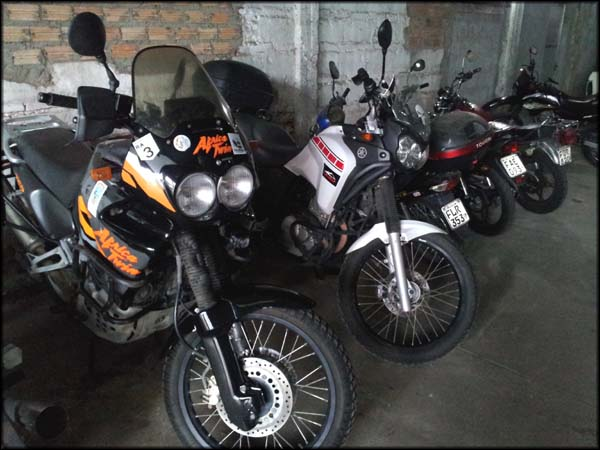No estacionamento, ao lado da Africa Twin que já viajou bastante
Me vesti e fui pra rua, a pé, pois é tudo muito perto, e caí dentro na correria para resolver os problemas e burocracias.
A região onde fiquei se localizava a quatro quarteirões da Praça Internacional, onde fica a divisa com o Uruguai. Era uma área bem residencial, com ruas calmas e pouca gente circulando. Algumas lojas fechadas, um pouco de aspecto de abandono. Apesar disso, agora eu já via com melhores olhos esse pedacinho de Santana do Livramento, que na véspera me deixara nervoso.
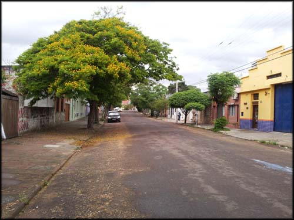Ruazinha em Santana do Livramento, aprazível
Fui em uma corretora, Hélio Seguros, tinha passado em frente no dia anterior mas já estava fechada. De novo, estava fechada, com um bilhete na porta escrito "volto logo...". Não esperei, e continuei catando outra corretora. Achei a Miguel Moreira, na Rua Uruguai, paralela a do meu hotel. Me informei, custava R$ 87,00 para 7 dias de seguro, e só precisava do documento da moto. Ele fez uma guia, fui ao banco Itaú, que incrivelmente existia na cidade, paguei, voltei na corretora, ele me deu uma via do formulário, grampeou o comprovante bancário, um cartão com telefone dele caso precisasse, e pronto. Resolvido. Já podia rodar no Uruguai a partir do dia seguinte, por 7 dias.
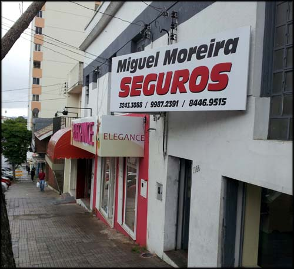Corretora de Seguros, atendimento muito bom
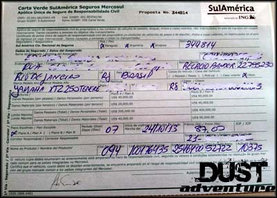Este é o formulário que fica com você, o tal Seguro Carta Verde do Mercosul
Depois catei a delegacia da Polícia Federal. Expliquei que viajava de moto, e fui bem atendido pelo agente que lá estava. Ele pediu os documentos, jogou lá no computador, e disse que estava feito, mas que não era muito comum fazer essa comunicação em outras delegacias. Lá eles faziam regularmente, mas que não era comum.
Parti pra área comercial. Os Free Shops são grandes templos do consumo, um monte de brasileiro comprando muamba para revender em suas cidades, todos os preços em dólar. O forte são bebidas, perfumaria, eletrônicos e roupas.
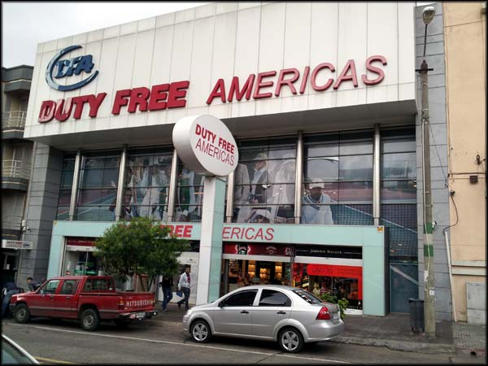Um dos muitos Free Shops em Rivera
Rodei várias lojas, vi algumas roupas maneiras, mas tudo caro demais pro meu bolso. Uma calça que eu queria comprar estava 130 dólares, o que em reais hoje custaria mais de R$ 300,00. Ora, que coisa, pode até ser que no Brasil essa mesma calça custe 400 reais, e aquele preço valha a pena, mas eu no Brasil não compro calça de 400 reais, então, não vi vantagem nenhuma naquele troço de free shop. Andei por mais lojas, vi mais coisas. Nada me pareceu valer a pena, frustrante.
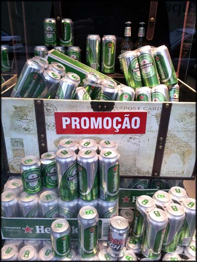Uma das poucas coisas que me interessou, mas não dava para levar de moto. Uma lástima...
Desisti das compras e fui almoçar. Achei uma comida por peso, no lado brasileiro da Praça Internacional, que figura como a divisa da fronteira. Comida razoável, mas para quem não comia nada há um tempão, serviu. Desde o início da viagem eu tive um poucos almoços que pudesse chamar de decente. Percebi que, viajando sozinho, é um tipo de programa que não me atraía. Certamente se tivesse companhia na viagem teria curtido alguns restaurantes e bares legais, procurado por eles. Sozinho não me animei, me ative mais às paisagens e lugares que chamam a atenção.
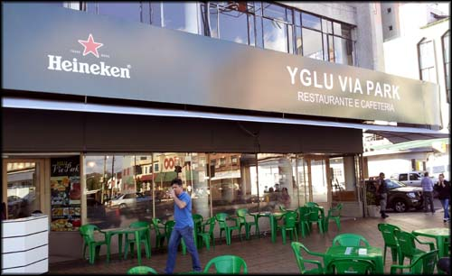Escolhi o restaurante pela fachada, obviamente
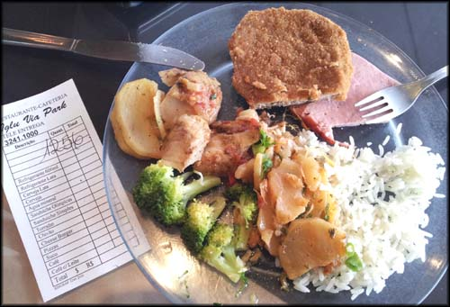R$ 12,56, comida sem sabor, mas era comida.
Para descansar do almoço ainda caminhei na parte comercial, mas logo me estressei, não me sinto bem nesses ambientes de “compra compra compra”, com camelôs chatos te abordando e oferecendo coisas. Fui passear na área residencial de Rivera. Casas humildes, comércio esquisito, comecei a me familiarizar com os termos em espanhol, os nomes de ruas... ah, diferenças culturais, acho muito legal.
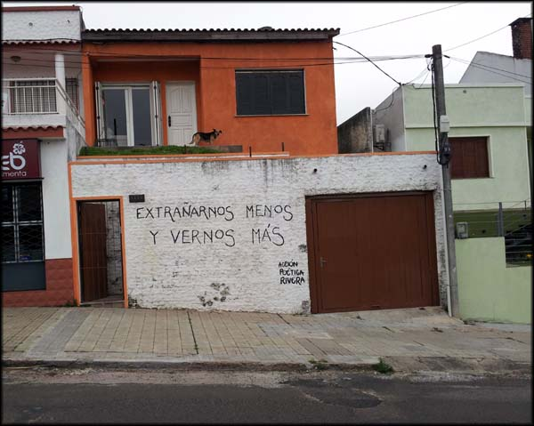Extrañarnos menos y vernos más
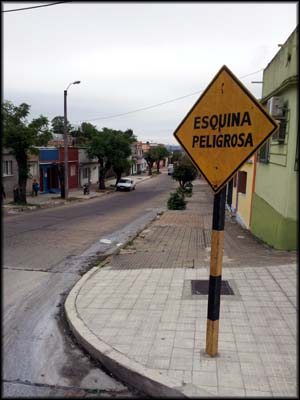Esquina Peligrosa
Fiquei fazendo hora até o fim do dia. Não achei nenhum lugar bacana para ficar passando o tempo, bebericando umas cervejas, era tudo muito feio e as pessoas estavam ali só para compras mesmo. Comi um cachorro quente de barraquinha, porque 80% das pessoas que eu via passando estavam comendo aquilo, o que me deixou curioso. Decidi provar pra ver se era bom mesmo. Boooom não era, mas era barato, custava 1 real. Deve ser por isso que todo mundo comia.
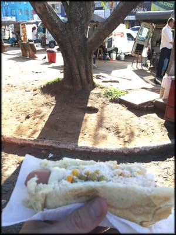Cachorro quente de carrocinha em Rivera, não me matou e custou 1 real
Lembrei que precisava fazer câmbio, e passei por algumas agências, parei na que tinha a melhor cotação do real, por 9,20. Na hora de me dar o dinheiro, o rapaz utilizo outra cotação, saiu por 9,60. Troquei 300 reais e me senti rico recebendo de volta incríveis 2.880,00 pesos uruguaios.
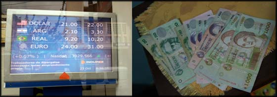Câmbio por pesos uruguaios, me senti com muito dinheiro
Passei num supermercado, me reabasteci de barrinhas de cereal, e voltei pro hotel. Aproveitei a noite para arrumar melhor as coisas e preparar a bagagem para a primeira investida de verdade em terras estrangeiras no dia seguinte.
Um belo por do sol visto da janela do quarto do hotel levantou o ânimo para o próximo dia de viagem, calculei que possivelmente não pegaria chuva no dia seguinte. Animei.
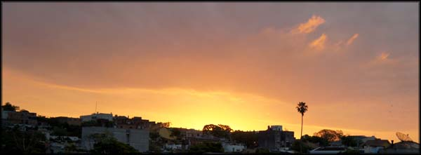O sol baixando na direção do Uruguai, expectativa
Descansei, e mais tarde saí procurando onde jantar. Mas era tudo muito feio, poucos lugares abertos, todos com aquela cara de botequim onde é bom beber mas não comer, e não tive apetite. Fui dormir com fome. No dia seguinte começava a fase mais radical da aventura, provavelmente....